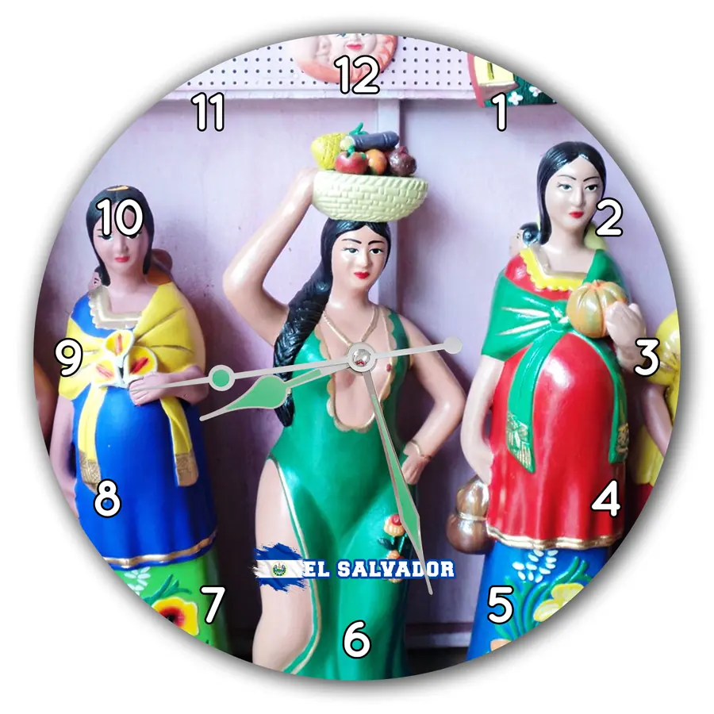

Un detalle para quien lo siente suyo
Modelo ESV-021
Reloj Artesanías de figuras tradicionales
$20 USD
Envío gratis a todo El Salvador
Las figuras artesanales con vestidos de colores ponen las tradiciones al frente. Un detalle para dar un acento de cultura popular a tu espacio. Consulta la personalización para convertirlo en un detalle hecho para esa persona. MDF, 29 cm de diámetro, $20 y envío gratis a todo El Salvador. Escríbenos por WhatsApp con el código ESV-021.
- Diámetro
- 29 cm
- Material
- MDF
- Diseño
- ESV-021
- Pedido
- Por WhatsApp